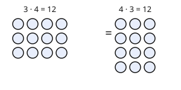

Rechengesetze und geschickt rechnen
Mit einem KI-Tutor lernen
Ein KI-Tutor erklärt dir diese Seite und hilft dir bei den Aufgaben. Wähl deinen Assistenten:
Mit Claude öffnen Mit ChatGPT öffnen Mit Mistral Vibe öffnen
Du nutzt dein eigenes Konto beim Anbieter. Der Assistent ist kein Angebot von lernapps.net: lernapps liefert nur Inhalte und Aufgaben. Die Wahl gilt für alle Seiten, nur auf diesem Gerät.
Was du hier lernst
Manche Aufgaben kannst du im Kopf lösen, wenn du die Reihenfolge geschickt änderst. Nach dieser Seite kennst du drei Rechengesetze und nutzt sie für vorteilhaftes Rechnen. Du brauchst die Vorrangregeln von der Seite davor.
Aufgabe
Lösung
Richtige Antwort: 700
Du darfst die Faktoren tauschen: 25 · 4 = 100, dann 100 · 7 = 700.
Plättchen umlegen
Wenn eine Rechnung unbequem aussieht, darfst du die Zahlen manchmal umstellen. Das Vertauschungsgesetz zeigt das Bild: 3 Reihen mit je 4 Plättchen sind genauso viele wie 4 Reihen mit je 3.

© CC0-1.0Dreht man das Plättchenbild, bleibt die Zahl der Plättchen gleich: 3 · 4 = 4 · 3.
Wenn du bei drei Zahlen frei wählen willst, womit du anfängst, hilft das Verbindungsgesetz: Es erlaubt, Klammern anders zu setzen. Wenn du 7 · 12 im Kopf rechnen willst, zerlegst du 12 in 10 + 2. Das erlaubt das Verteilungsgesetz: Es erlaubt, einen Faktor auf eine Summe oder Differenz zu verteilen. Das zweite Bild zeigt es.
 © CC0-1.0
© CC0-1.07 · 12 = 7 · 10 + 7 · 2 = 70 + 14 = 84.
- Vertauschungsgesetz (Kommutativgesetz)
Bei Plus und bei Mal darfst du die Zahlen tauschen, das Ergebnis bleibt gleich. Beispiel: 7 + 5 = 5 + 7 und 3 · 4 = 4 · 3. Bei Minus und Geteilt gilt das nicht.
- Verbindungsgesetz (Assoziativgesetz)
Bei Plus und bei Mal darfst du die Klammern anders setzen. Die Reihenfolge der Zahlen bleibt. Beispiele: (8 + 6) + 4 = 8 + (6 + 4) = 18 und (2 · 5) · 7 = 2 · (5 · 7) = 70.
- Verteilungsgesetz (Distributivgesetz)
Ein Faktor darf auf eine Summe oder Differenz verteilt werden. Beispiel: 3 · (10 + 2) = 3 · 10 + 3 · 2 = 36.
Beispiel
6 · 99 geschickt rechnen
99 ist fast 100. Du schreibst 99 = 100 − 1 und verteilst die 6.
Übung
Aufgabe
Drei Beispielaufgaben, jede mit ihrer Lösung:
Aufgabe Nr. 1
Rechne geschickt: 25 · 18 · 4
Tipp
Tausche die Faktoren: 25 · 4 ergibt eine runde Zahl.
Lösung
Richtige Antwort: 1800
Aufgabe Nr. 2
Rechne geschickt: 25 · 3 · 4
Tipp
Tausche die Faktoren: 25 · 4 ergibt eine runde Zahl.
Lösung
Richtige Antwort: 300
Aufgabe Nr. 3
Rechne geschickt: 25 · 16 · 4
Tipp
Tausche die Faktoren: 25 · 4 ergibt eine runde Zahl.
Lösung
Richtige Antwort: 1600
Aufgabe
Drei Beispielaufgaben, jede mit ihrer Lösung:
Aufgabe Nr. 1
Rechne geschickt: 4 · 99. Schreibe 99 als 100 − 1.
Tipp
4 · 99 = 4 · 100 − 4 · 1.
Lösung
Richtige Antwort: 396
Aufgabe Nr. 2
Rechne geschickt: 8 · 99. Schreibe 99 als 100 − 1.
Tipp
8 · 99 = 8 · 100 − 8 · 1.
Lösung
Richtige Antwort: 792
Aufgabe Nr. 3
Rechne geschickt: 9 · 99. Schreibe 99 als 100 − 1.
Tipp
9 · 99 = 9 · 100 − 9 · 1.
Lösung
Richtige Antwort: 891
Aufgabe
Lösung
Richtige Antwort: Vertauschungsgesetz – 7 + 5 = 5 + 7; Verbindungsgesetz – (8 + 6) + 4 = 8 + (6 + 4); Verteilungsgesetz – 3 · (10 + 2) = 3 · 10 + 3 · 2
Beim Vertauschen ändert sich die Reihenfolge, beim Verbinden die Klammer, beim Verteilen wird ein Faktor auf eine Summe verteilt.
Aufgabe
Lösung
Richtige Antwort: Die Aussage stimmt nicht.
Das Vertauschungsgesetz gilt nur für Plus und Mal. 9 − 4 = 5, aber 4 − 9 kannst du mit diesen Zahlen nicht rechnen: 4 ist kleiner als 9.
Fehler gefunden oder eine Idee für diese App?